insights.plots (Plots, tables and attributes shows how a host keeps them).
Every map and gallery gets this tab with a Maps | Insights switch; insights: { enabled: false } removes it.
Where the yield went, and which wafers differ.
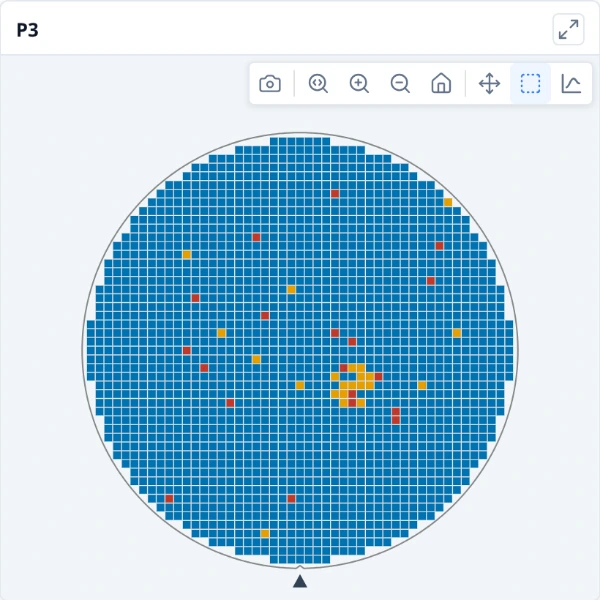
PAT verdict mapEach die coloured by its part average testing verdict (within the limits, an outlier or failing), on the map or on every wafer of a gallery, to show where the PAT outliers sit.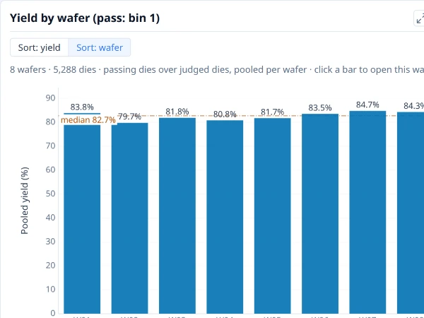
Yield by waferYield of each wafer or group: passing dies as a share of judged dies, with partial and edge-excluded dies left out. The line is the median bar.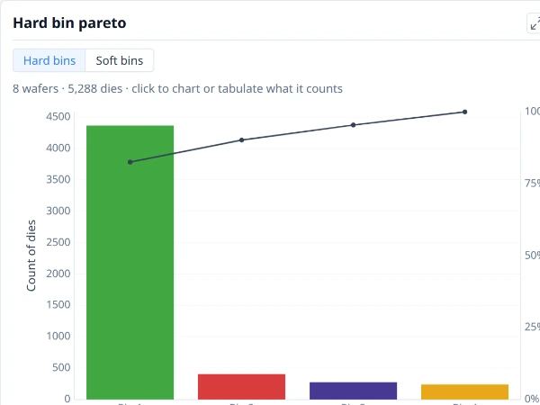
Bin paretoDies in each bin, largest first, so the bins that cost the most yield lead. Shown alone, the line is the running share of all dies.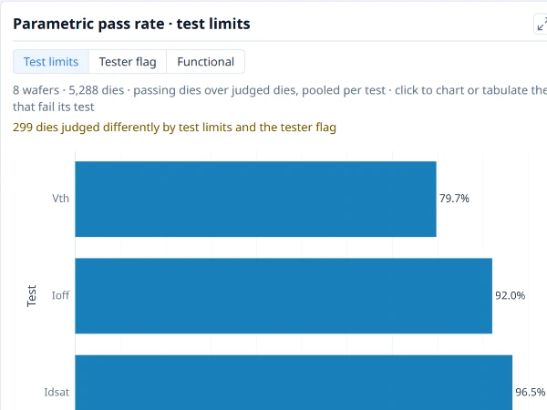
Pass rate by testThe share of judged dies that pass each test, lowest first, so the tests that fail the most dies lead.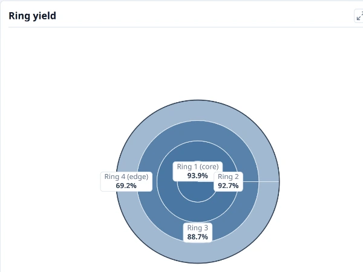
Ring yieldYield of each ring, from the wafer centre to its edge, to show a radial pattern.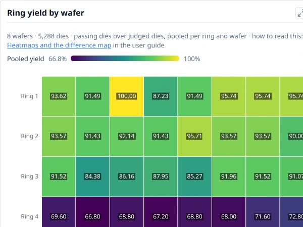
Ring yield by waferYield of each ring on each wafer (or group), as a colour, to show whether a radial pattern is on every wafer or on one.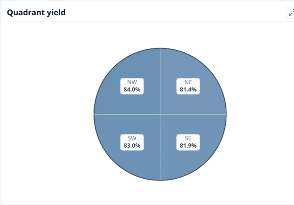
Quadrant yieldYield of each quarter of the wafer, to show a one-sided pattern.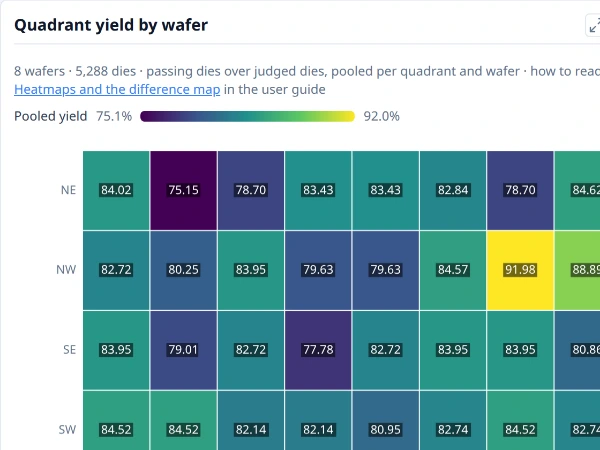
Quadrant yield by waferYield of each quarter of the wafer on each wafer (or group), as a colour, to show whether a one-sided pattern is on every wafer or on one.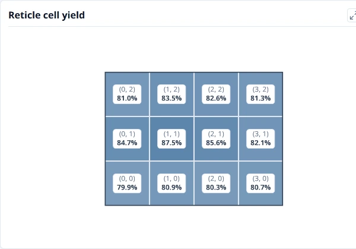
Reticle cell yieldYield of each position in the reticle, pooled over every shot on every wafer. A cell low everywhere points at the mask rather than the wafer.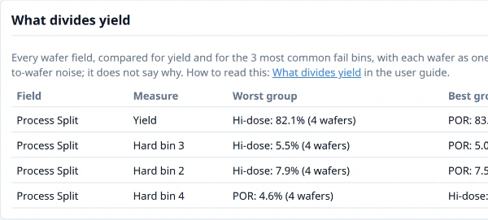
What divides yieldThe wafer and lot fields ranked by how strongly they divide yield, as places to look for a cause.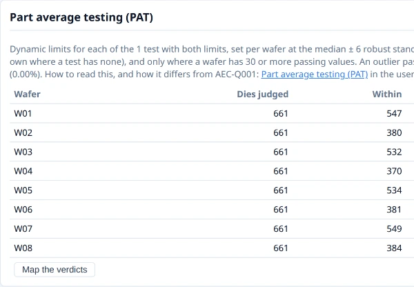
Part average testing (PAT)Dies outside part average testing limits, set from each wafer’s own spread of each test (the AEC-Q001 method), by wafer and by test.The shape of each measurement, not just its map colour. The comparison and the difference map appear once Group by is on.
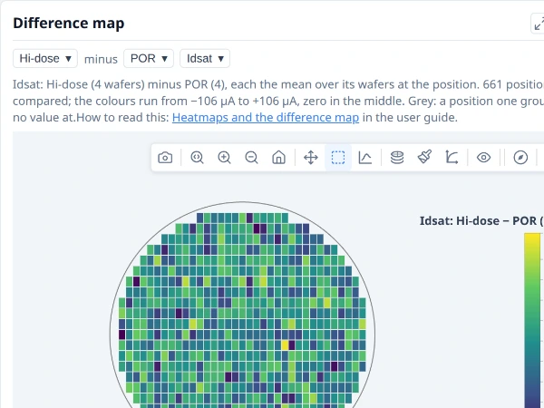
Difference mapOne group’s wafer map less another’s, die position by die position, to show where on the wafer they differ.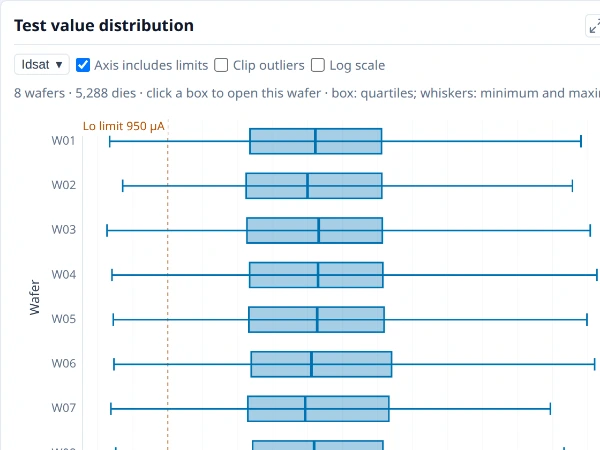
Test value distributionHow one test’s values spread on each wafer or group: the box holds the middle half of the dies, the line inside it is the median, and the whiskers reach the lowest and highest values.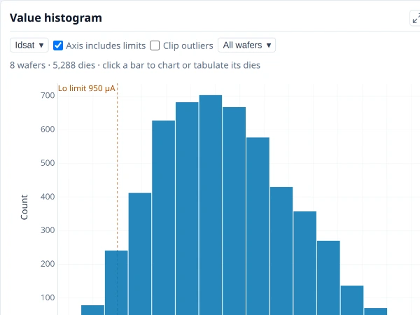
Value histogramHow one test’s values are distributed: the number of dies in each value range, with the test’s limits marked.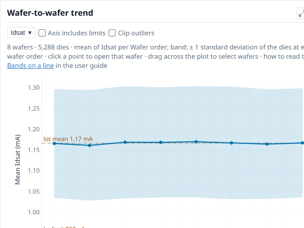
Wafer-to-wafer trendEach wafer’s mean of one test in wafer order, with a band of one standard deviation either side, to show drift through the lot.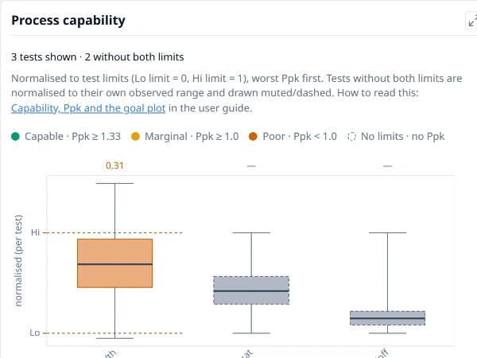
Process capabilityEvery test with limits on one scale, the low limit at 0 and the high limit at 1, sorted lowest Ppk first, so the tests closest to their limits lead.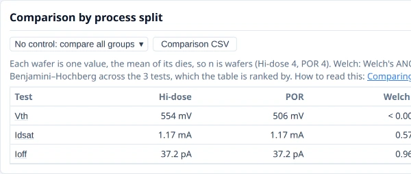
Comparison by groupYield and each test compared between groups, counting each wafer once, with how likely a difference this large is by chance.Which measurements move together — the question a wafer map cannot answer.
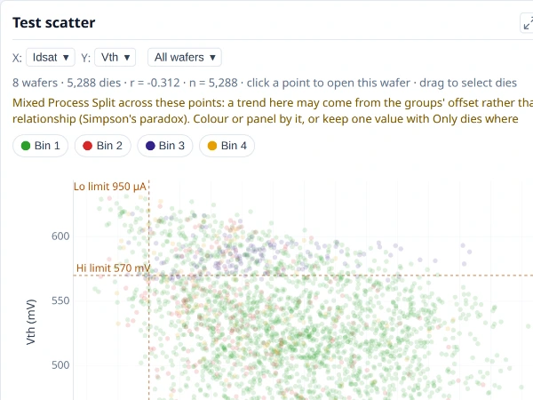
Test scatterOne test against another, a point per die, to show whether the two move together. r is the correlation coefficient and n the number of dies.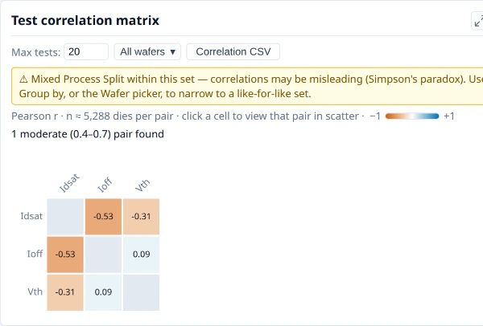
Test correlation matrixThe correlation of every pair of tests. A strong colour means two tests move together; click a cell to show the pair in the scatter.One of each chart a plot can be. New plot builds your own, and a saved plot draws on the next lot.
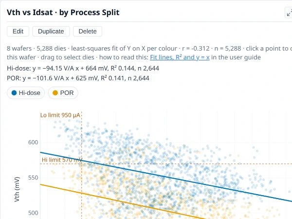
Scatter plotOne field against another, a point per die or per wafer, to show whether they move together.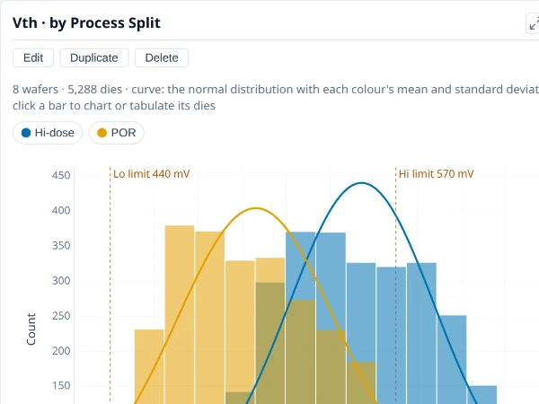
HistogramHow a value is distributed: the number of dies or wafers in each value range.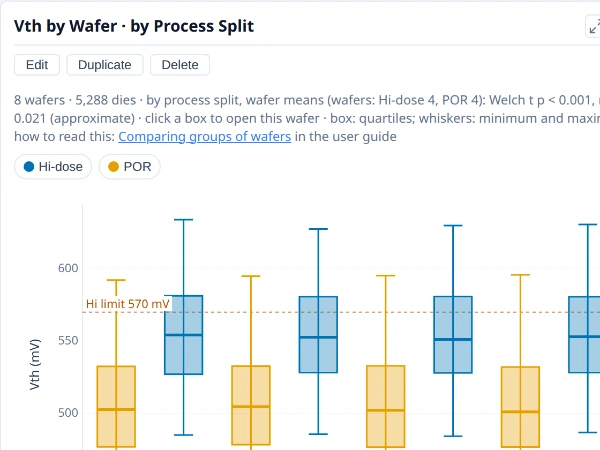
Box plotHow a value spreads in each category: the box holds the middle half, the line inside it is the median, and the whiskers reach the lowest and highest values.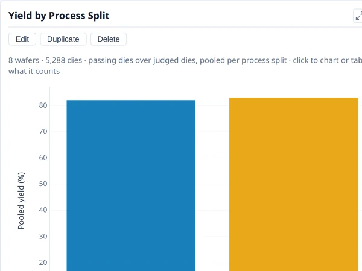
Bar chartA count, a share or a summary value for each category, side by side.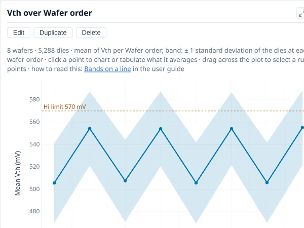
Line chartA summary value in order along the X axis (wafer order, a test, a condition), to show a trend.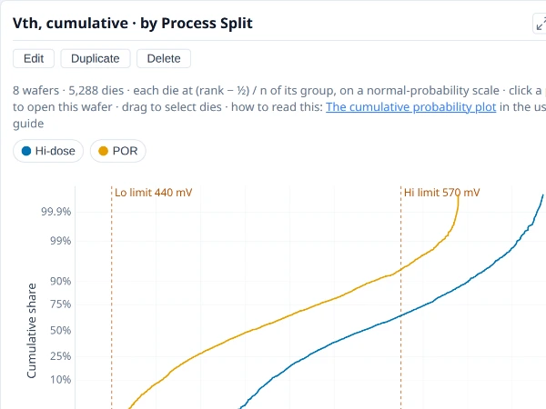
Probability plotThe share of values at or below each value, a curve per colour, so whole distributions compare, tails included.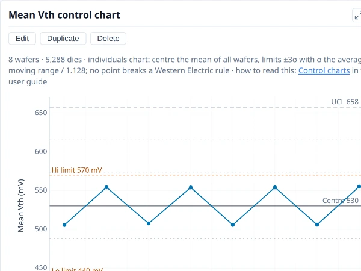
Control chartOne value per wafer in order against its centre line and control limits, with the points that break a Western Electric rule marked.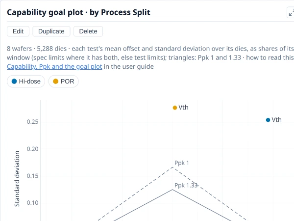
Capability goal plotEach test with both limits placed by how far its mean is off centre and how wide its spread is, as shares of its limit window. A test outside the solid triangle is short of Ppk 1.33.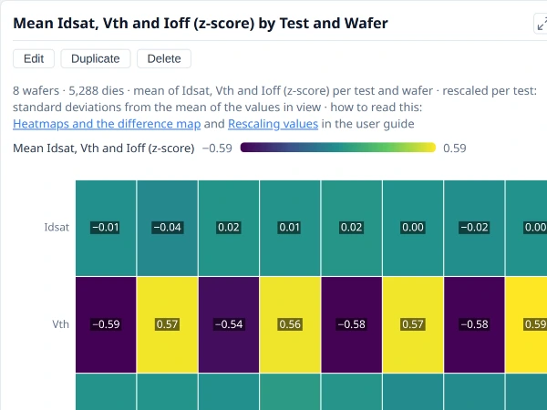
HeatmapA value for every pair of two categories, as a colour, to show where the two interact.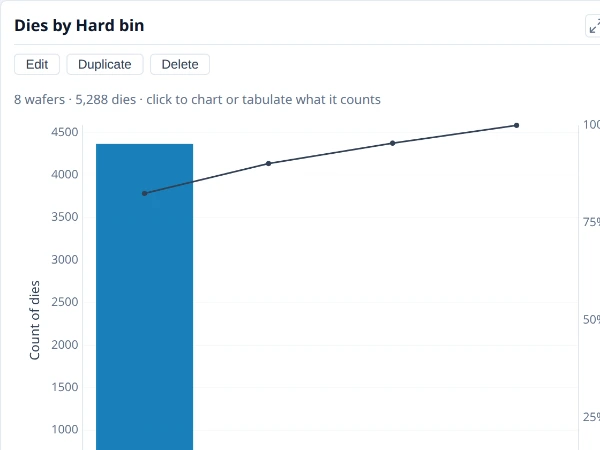
ParetoCategories largest first with a line for their running share, to show which few account for most of the total.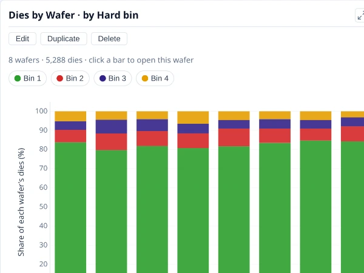
Stacked bars and sharesEach bar split into its colours, as counts or as each colour’s share of its own total, to show what a category is made of.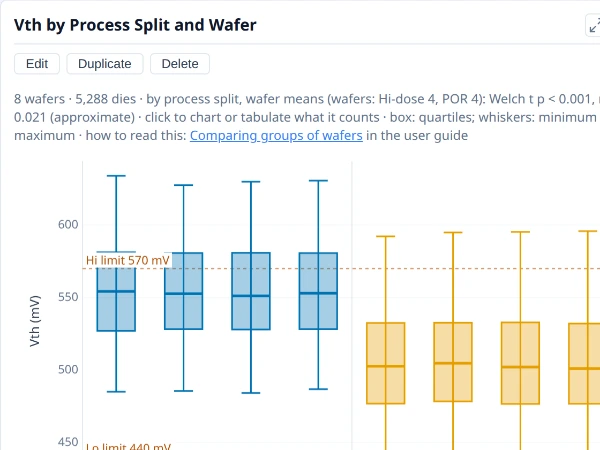
Nested categoriesA box or bar with categories inside categories, such as lots with their wafers, to show whether variation sits between or within the groups.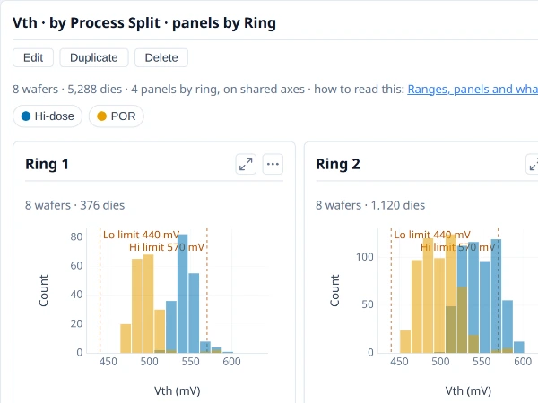
Panels (small multiples)One small chart per value of a field, on shared axes, to compare the same view across groups side by side.The numbers behind the charts, to read, copy or export.
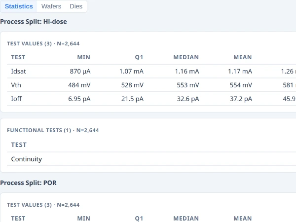
Statistics tableOne row per test and group: the count, mean, spread, extremes, limits and capability, to read the numbers behind the charts.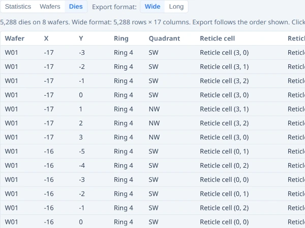
Dies tableOne row per die with its position, bin and values, to see exactly which dies a chart counts; it exports to CSV.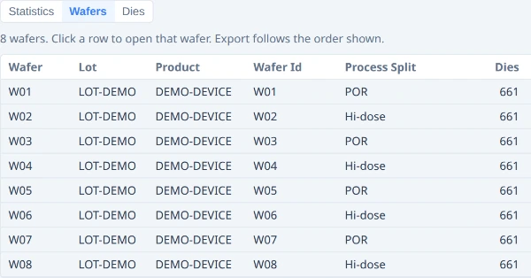
Wafers tableOne row per wafer with its attributes and its yield, to check what each wafer is and to compare them.The maps, the sweeps and the menu on picked dies are not on this page; each has its own.